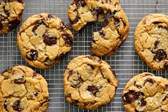

Home
Whole Grain Breakfast Cookies

My sister and I love something sweet with our coffee in the morning.
We created this recipe to make a wholesome breakfast.
I generally double the batch and keep them in the freezer.
They taste even better frozen (still soft!).
Whole grains, fiber, and protein and no butter!
Can it really be delicious? Yes! My kids can't keep their fingers out of the batter.
I decided to add it to Allrecipes because everyone keeps asking me for the recipe. Enjoy!
Ingredients
- 1 cup walnuts
- 1 ½ cups old-fashioned rolled oats (not instant)
- ⅓ cup whole wheat flour
- ½ cup ground flax meal
- 1 teaspoon baking soda
- ½ teaspoon salt
- 1 teaspoon ground cinnamon
- ½ cup almond butter
- ¼ cup canola oil
- ¼ cup blue agave nectar
- ⅓ cup brown sugar
- 1 egg
- 1 teaspoon vanilla extract
- ½ cup dried cherries
- 1 cup semi-sweet chocolate chips
Instructions
- Preheat oven to 375 degrees F (190 degrees C).
Line baking sheets with parchment paper.
- Pulse the walnuts in a food processor several times to chop;
continue processing until the walnuts are ground into flour; transfer to a bowl.
Mix in the rolled oats, whole wheat flour, flax meal, baking soda, salt, and cinnamon until thoroughly combined.
- Combine the almond butter, canola oil, agave nectar, brown sugar, egg, and vanilla extract in the food processor and process a few seconds to blend the ingredients well;
transfer the almond butter mixture to a large bowl and fold in the dried cherries and chocolate chips.
Mix the walnut-oatmeal mixture into the almond butter mixture (dough will be very thick).
- Scoop up heaping teaspoons of dough, and form into balls;
lay the dough balls onto the prepared baking sheets, about 2 inches apart.
- Bake in the preheated oven until lightly browned, 8 to 10 minutes. Remove from oven and flatten the cookies with a spatula.
Allow to cool for about 5 minutes on the baking sheets before removing to finish cooling on wire racks.